Bizflow POS is a point-of-sale and back-office system made for medical stores and general stores in Pakistan. It sells by tablet, strip or box, keeps every batch with its expiry date, runs customer khata (udhaar), and keeps working when the internet is down. Every screen can be shown in English or Urdu.
This manual explains every screen, every field and every button, in the order you will meet them. Each screenshot comes from the real app. The store in the pictures is a demo store called Bizflow Pharmacy.
| Person | Signs in with | Can use |
|---|---|---|
| Owner / Admin | Password (8+ characters) | Everything: the Backoffice (stock, purchases, reports, khata, settings) and the till. |
| Cashier | 4-digit PIN | The till only: sales, returns, cash in/out, closing their own shift. |
| Cashier with “Can approve” | 4-digit PIN | The till, and can also approve other cashiers’ actions with their PIN (for example a senior salesman or manager). |
B1 and T01. They are printed in every receipt number, e.g. B1-T01-000013.Bizflow POS_x.y.z_x64-setup.exe to the computer (USB drive, WhatsApp desktop or download).store.sqlite in C:\Users\<you>\AppData\Roaming\pk.medstore.pos\. Daily copies are kept in the backups folder beside it (see Daily backup files).The very first screen asks what this computer is. You see it only once per computer.
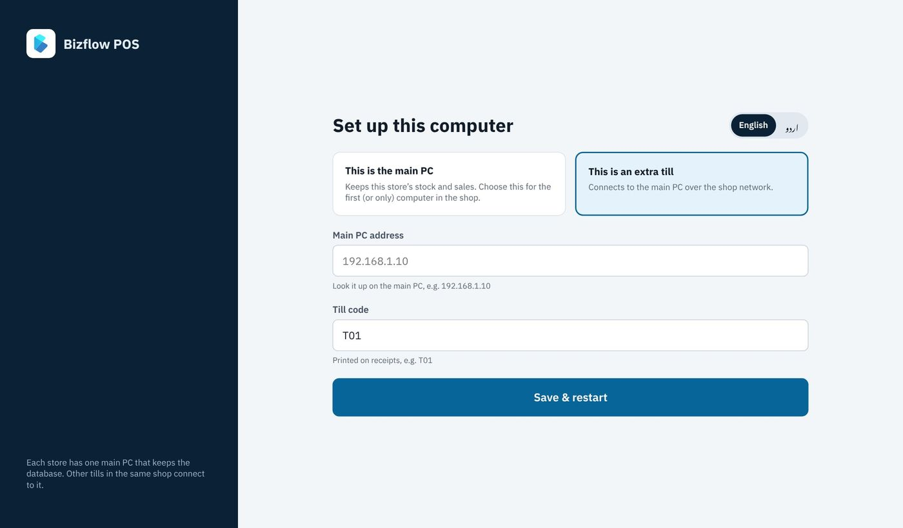
| Field / button | What to do |
|---|---|
| This is the main PC | Choose this on the first (or only) computer in the shop. It will keep the store’s stock, sales and khata. |
| This is an extra till | Choose this on any other counter computer in the same shop. |
| Main PC address | Extra tills only. The network address of the main PC, e.g. 192.168.1.10. You can see it on the main PC in Windows network settings. Give the main PC a fixed address in your router so it never changes. |
| Till code | A short name for this counter, e.g. T01 for the main counter, T02 for the second. It is printed on receipts and must be different on every computer. |
| English / اردو | Switches the language of this screen. |
| Save & restart | Saves the choice and restarts the app. |
On the main PC the next screen creates the store and the owner login.
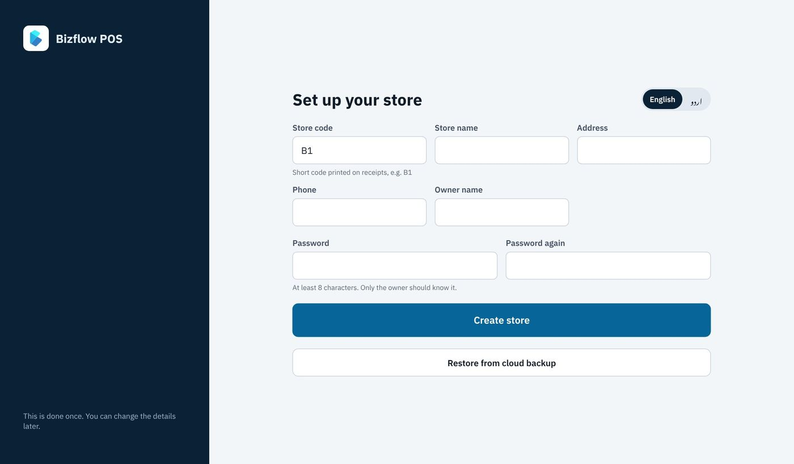
| Field | What to enter |
|---|---|
| Store code | A short code for this branch, e.g. B1. It appears in every receipt number and cannot be changed later. Use a different code for each branch. |
| Store name | The name printed at the top of receipts, e.g. Bizflow Pharmacy. |
| Address, Phone | Printed under the name on receipts. |
| Owner name | The name shown on the sign-in screen for the owner login. |
| Password / Password again | At least 8 characters. Only the owner should know it. It opens the Backoffice. |
| Create store | Creates the store database and signs you in. |
| Restore from cloud backup | Use this instead when you are replacing a main PC and the store had cloud backup turned on. Paste the database URL and token; everything comes back. See Cloud backup. |
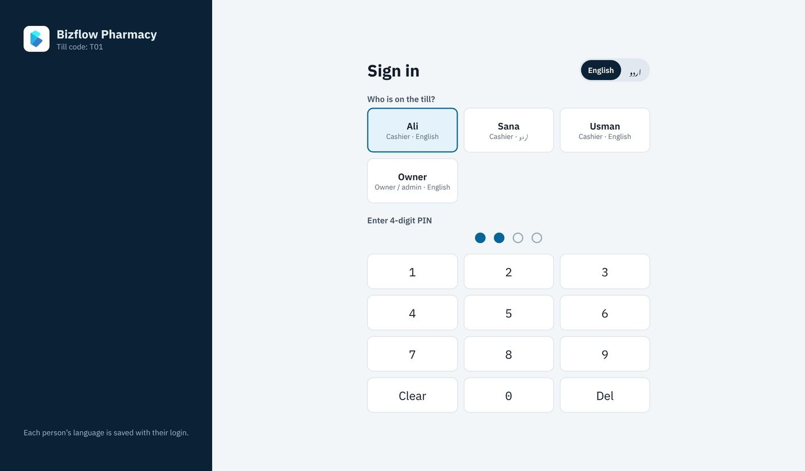
| Item | What it does |
|---|---|
| Who is on the till? | Tap your name. The All tile lists everyone; each tile shows the person’s role and language. |
| PIN pad | Type your 4-digit PIN with the mouse, touch screen or keyboard number keys. Clear empties it, Del removes the last digit. You are signed in as soon as the 4th digit is typed. |
| English / اردو | Language for the sign-in screen. After sign-in the app switches to your own saved language. |
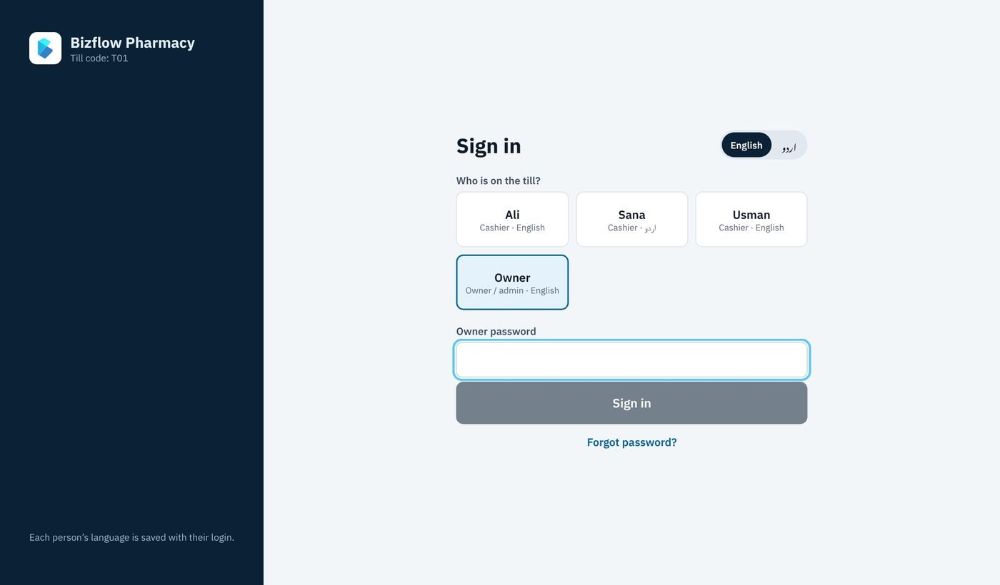
Tap the owner tile, type the password and press Enter or Sign in. The owner goes straight to the Backoffice.
Forgot password? works on the main PC only: type the recovery code you printed from Owner recovery code and choose a new password.
When a cashier signs in and has no open shift on this till, the app asks for the opening cash.
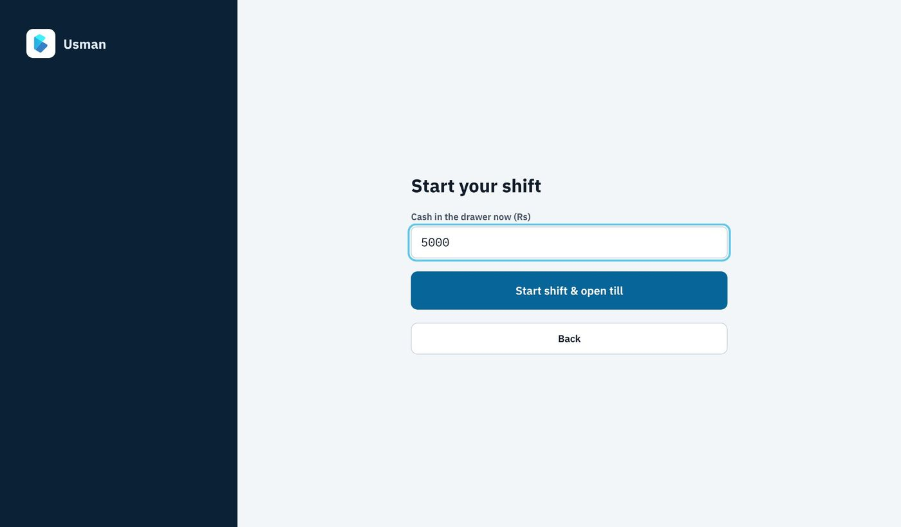
| Cash in the drawer now (Rs) | Count the float in the drawer and type it, e.g. 5000. This is the starting figure for the closing count. |
| Start shift & open till | Opens the shift and shows the till. A sale cannot be made without an open shift. |
| Back | Return to sign-in without opening a shift. |
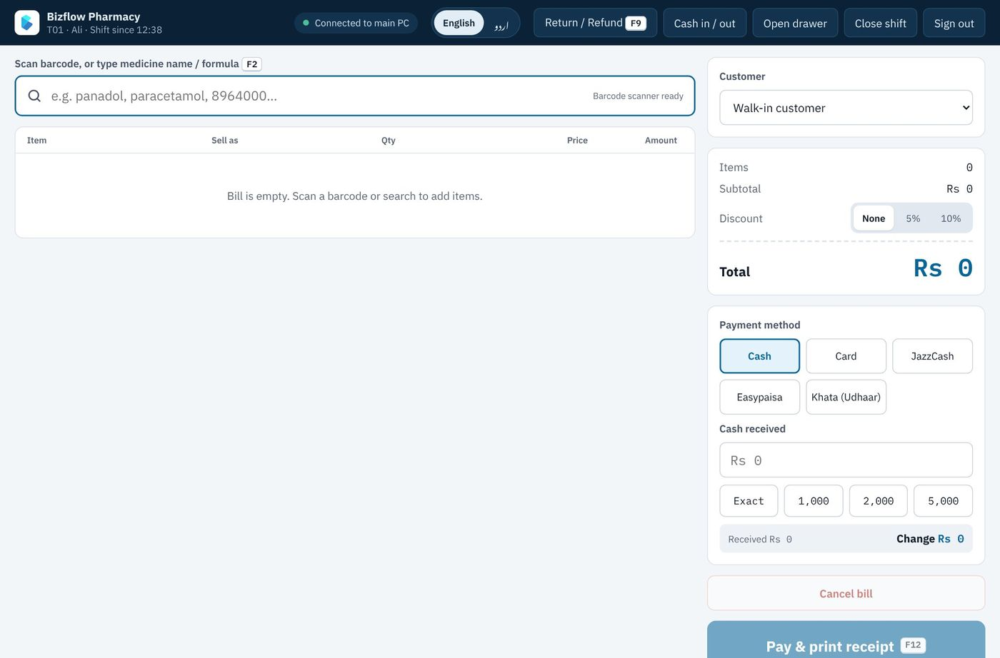
The screen has three parts: the top bar, the bill on the left and the payment panel on the right.
| Top bar item | What it does |
|---|---|
| Store name · till · cashier · shift time | Shows where you are and since when the shift is open. |
| Connection badge | Connected to main PC means sales are being saved. A yellow badge means the main PC can’t be reached (see Selling when the main PC is unreachable). |
| English / اردو | Switches the till language for this cashier. The choice is remembered. |
| Return / Refund F9 | Opens the returns screen. |
| Cash in / out | Records cash put into or taken out of the drawer (not sales). |
| Open drawer | Opens the cash drawer without a sale. Usually needs a manager PIN; every opening is logged. |
| Close shift | Starts the end-of-shift cash count and Z-report. |
| Activity & rules, Printer | Shown to the owner/admin only: the activity log and this till’s printer setup. |
| Sign out | Signs the cashier out. The shift stays open so the next sign-in continues it. |
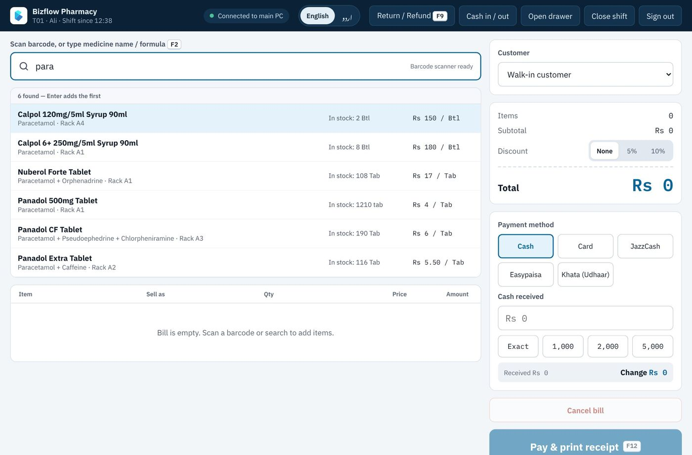
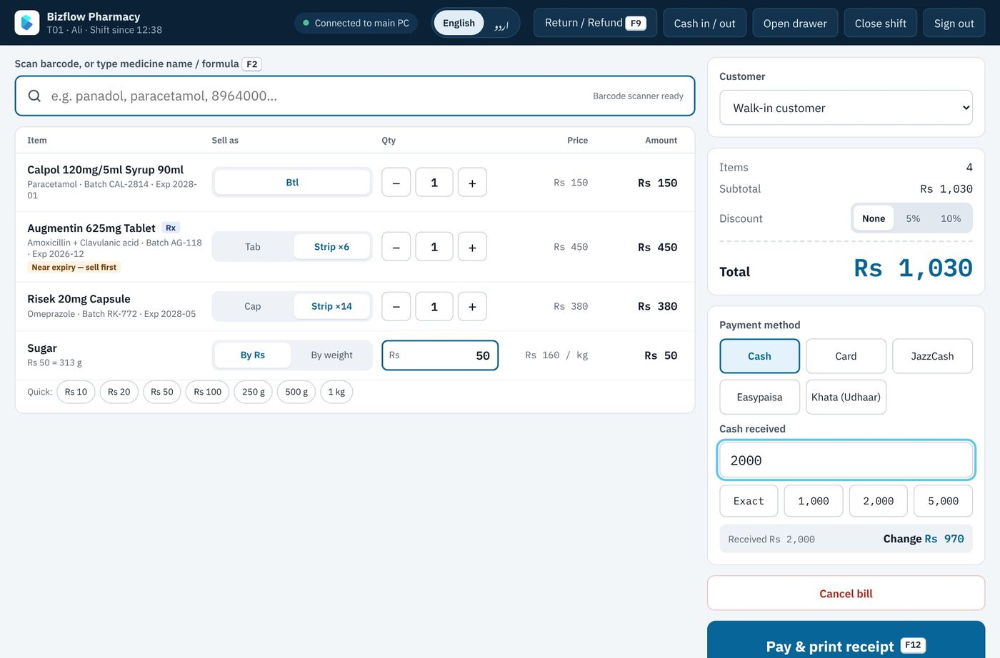
| Column / control | What it means |
|---|---|
| Item | Product name, formula, the batch being sold and its expiry. Badges: Rx prescription required; Near expiry — sell first; Only N in stock when you ask for more than there is. |
| Sell as | Which pack to sell: e.g. Tab or Strip ×6. Only packs ticked “Sell?” on the product appear. The price changes to that pack’s price. |
| Qty with − + | How many of that pack. Type a number or use the buttons. Scanning the same barcode again adds one more. |
| Weight items: By Rs / By weight | For loose items such as sugar or rice. By Rs: type the rupee amount the customer wants (Rs 50 = 313 g). By weight: type grams. The quick buttons (Rs 10 … 1 kg) fill common amounts. |
| Price / Amount | Price of one pack and the line total. |
| Field | What to do |
|---|---|
| Customer | Walk-in customer for normal sales. Choose a named customer to print their name on the receipt, or to sell on khata. + New customer adds one on the spot (name and phone). |
| Items / Subtotal | Number of lines and the total before discount. |
| Discount | None, 5% or 10% on the whole bill. A discount above the store’s limit (5% by default) needs a manager PIN. |
| Total | What the customer pays. Prices already include sales tax. |
| Payment method | Cash, Card, JazzCash, Easypaisa or Khata (Udhaar). |
| Cash received | Cash only. Type what the customer handed over, or tap Exact, 1,000, 2,000, 5,000. The Change to give back is shown in large figures. |
| Cancel bill | Empties the bill. Needs a manager PIN if the rule is on. Logged in the activity log. |
| Pay & print receipt F12 | Saves the sale, takes the stock off the shelf, opens the cash drawer (cash sales) and prints the receipt. |
When a cashier does something the store rules don’t allow alone, a box asks for approval. Nothing is saved until someone approves.
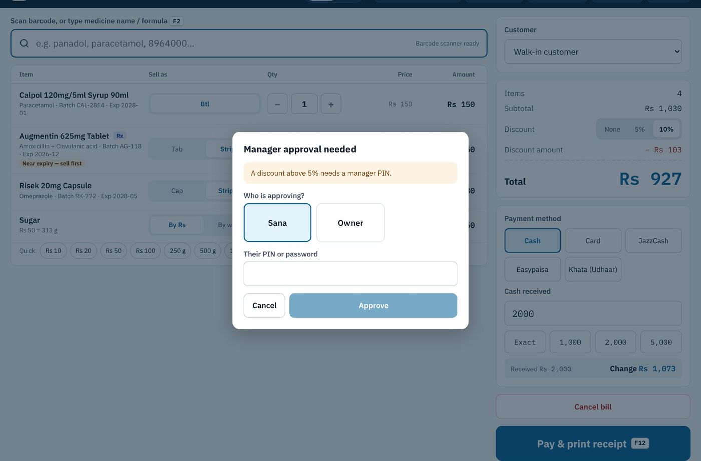
Every approval is written in the activity log with both names. Several wrong PINs lock that approver for a while.
The owner sets which actions need approval in Needs a manager PIN.
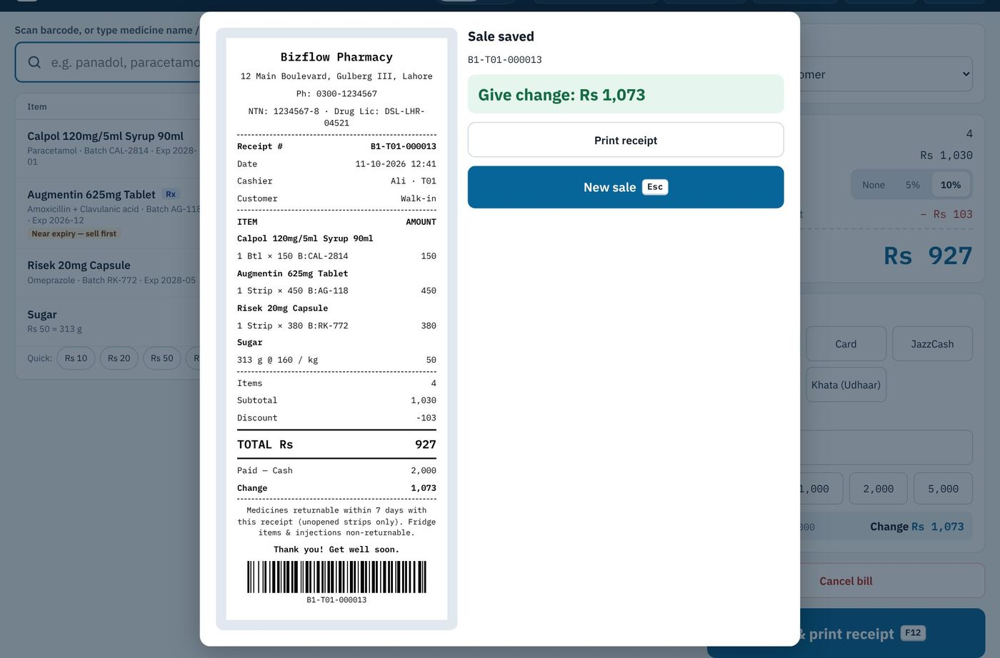
| Receipt number | e.g. B1-T01-000013 = store B1, till T01, bill number 13. |
| Give change | The change to hand back, in green. |
| Print receipt | Prints (another) copy. |
| New sale Esc | Clears the screen for the next customer. F12 does the same. |
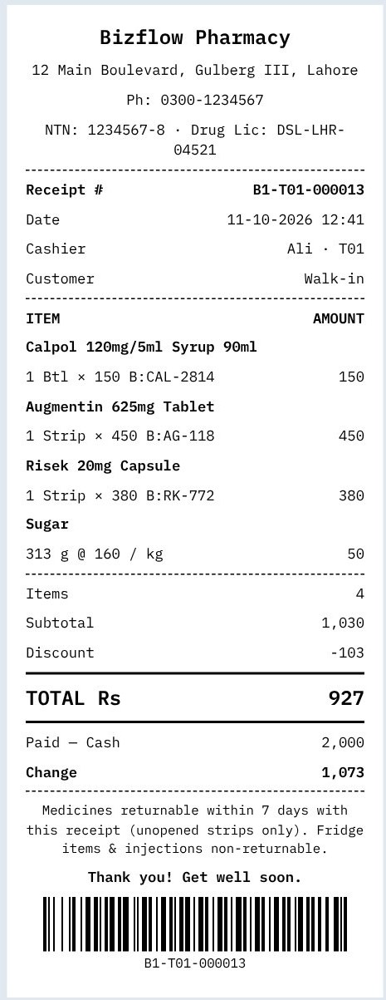
B:) and amount. Weight items show grams and price per kg.Khata sales also print the customer’s balance. When FBR reporting is on, the FBR invoice number and QR code are printed too.
A customer whose khata profile says Urdu receipt gets an Urdu receipt; everyone else gets the store’s default receipt language.
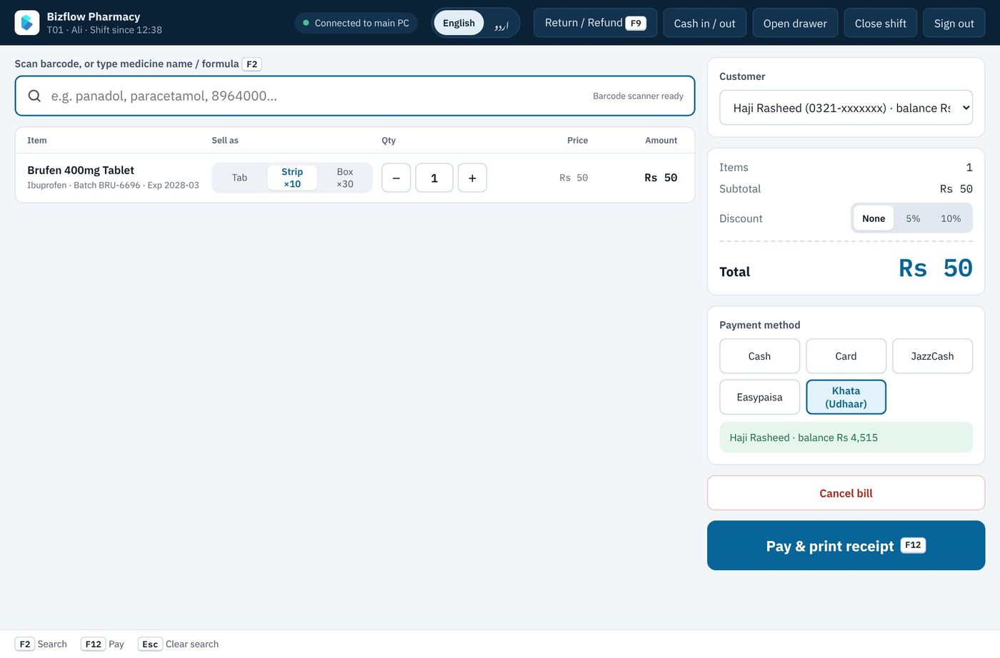
The bill appears at once in the customer’s ledger under Customers & Khata.
Press F9 or Return / Refund.
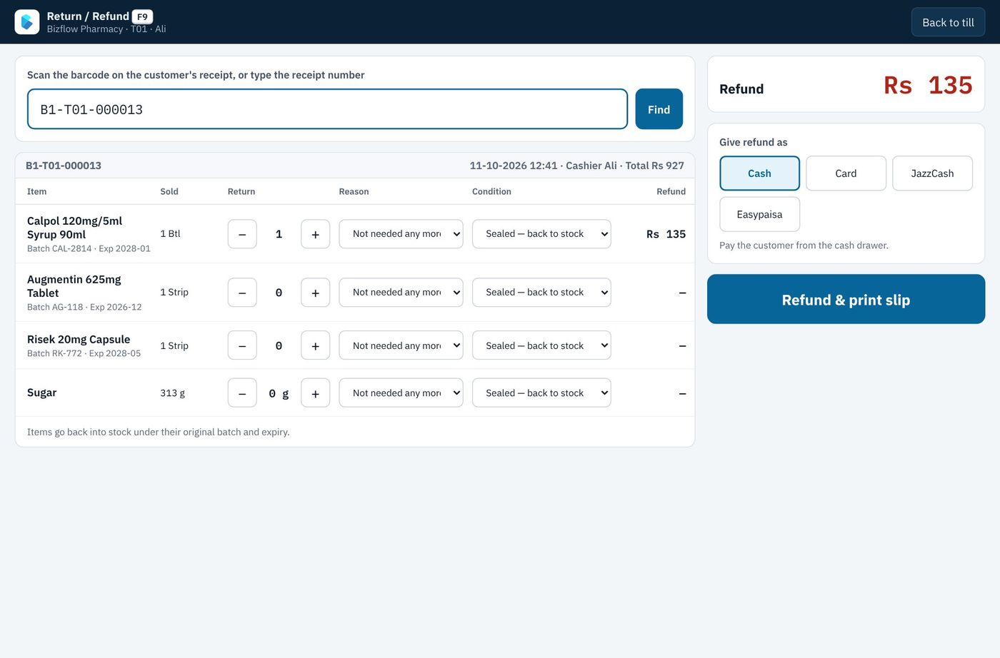
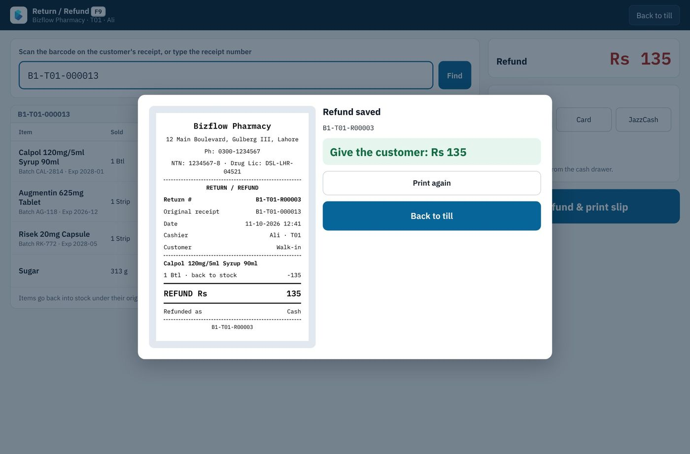
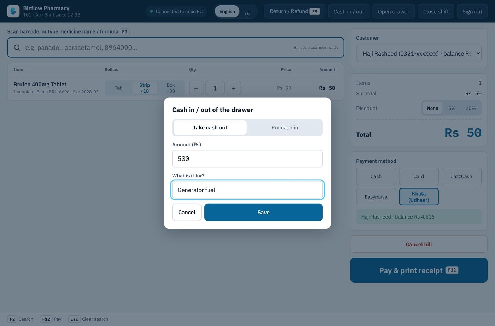
| Take cash out / Put cash in | Choose the direction. Use Put cash in for change from the bank; Take cash out for small shop payments or handing cash to the owner. |
| Amount (Rs) | The amount moved. |
| What is it for? | A short reason, e.g. Generator fuel, Tea for staff. It appears in the activity log and Z-report. |
| Save | Records it and opens the drawer. Taking cash out can be set to need a manager PIN. |
Each till has its own printer. The owner opens it with Printer in the till’s top bar.
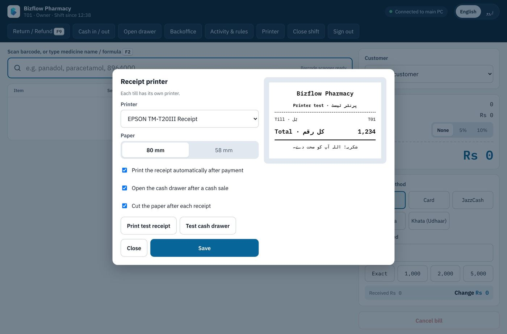
| Printer | Pick the thermal printer installed in Windows (e.g. EPSON TM-T20III, BlackCopper). Use the print dialog shows Windows’ print box instead. |
| Paper | 80 mm (standard) or 58 mm. The preview on the right changes to match. |
| Print the receipt automatically after payment | Prints without asking every time a sale is saved. |
| Open the cash drawer after a cash sale | Kicks the drawer connected to the printer. |
| Cut the paper after each receipt | For printers with an auto-cutter. |
| Print test receipt / Test cash drawer | Check the setup before saving. |
| Save | Saves the settings for this till. |
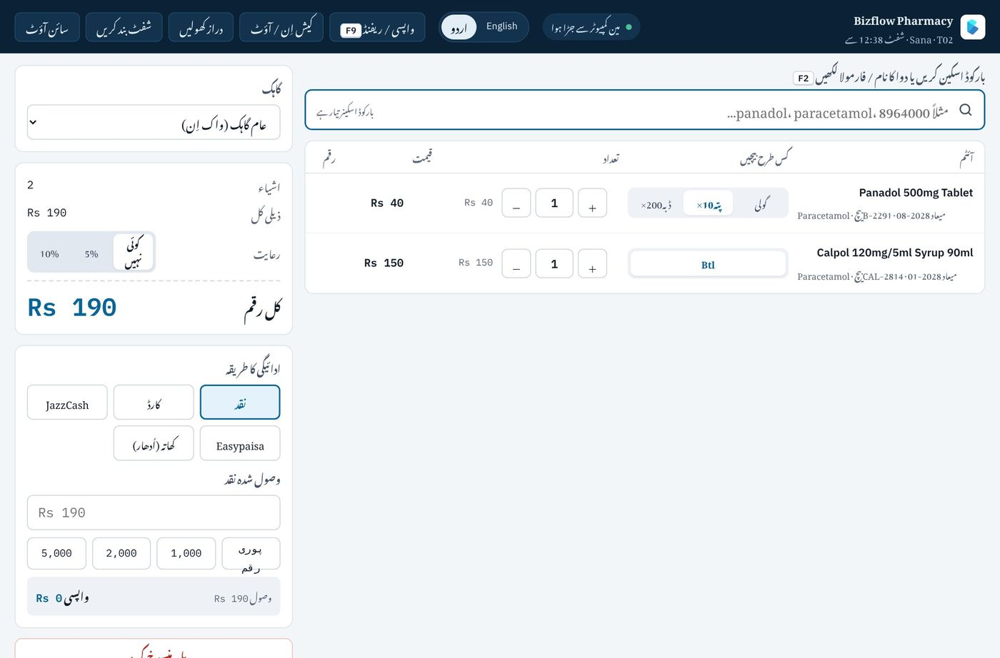
Tap اردو in the top bar. The whole screen turns right-to-left, with all labels in Urdu. Product names stay as printed on the pack, and numbers and receipt numbers stay in English digits so they are easy to match. Each cashier’s language is saved with their login.
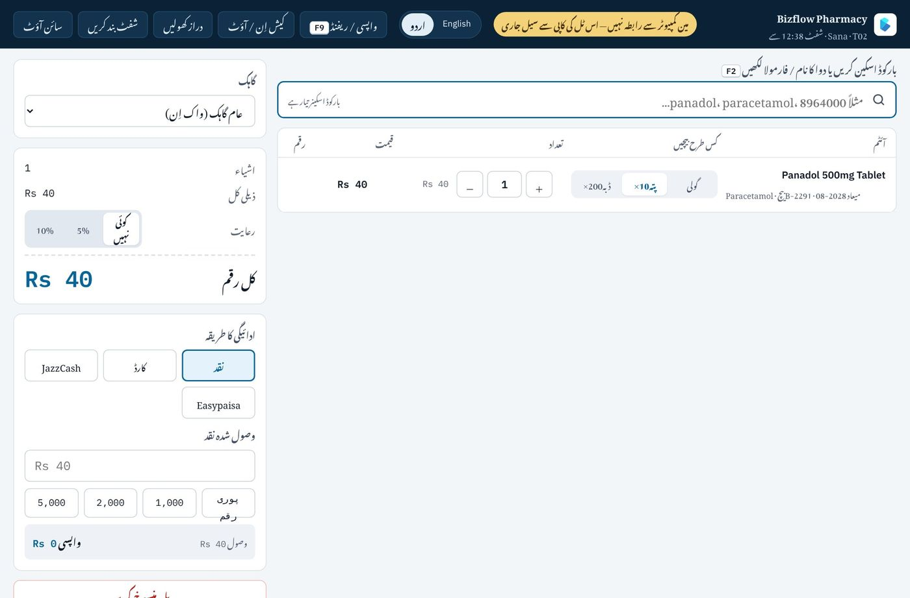
If the network or the main PC goes down, an extra till keeps selling from its own copy of the product list. A yellow badge shows Main PC not reachable — selling from this till’s copy.
B1-T02-X000001.At the end of the shift press Close shift.
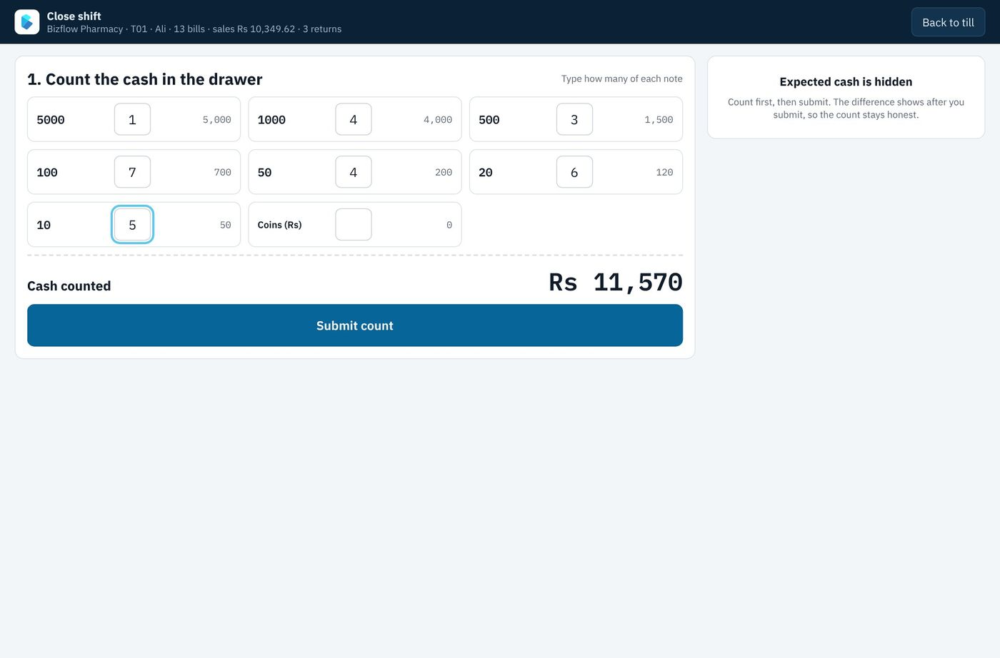
Type how many of each note are in the drawer (5000, 1000, 500, 100, 50, 20, 10) and the total of the coins in rupees. Cash counted adds them up. For cashiers the expected cash is hidden until the count is submitted, so the count stays honest. Press Submit count.
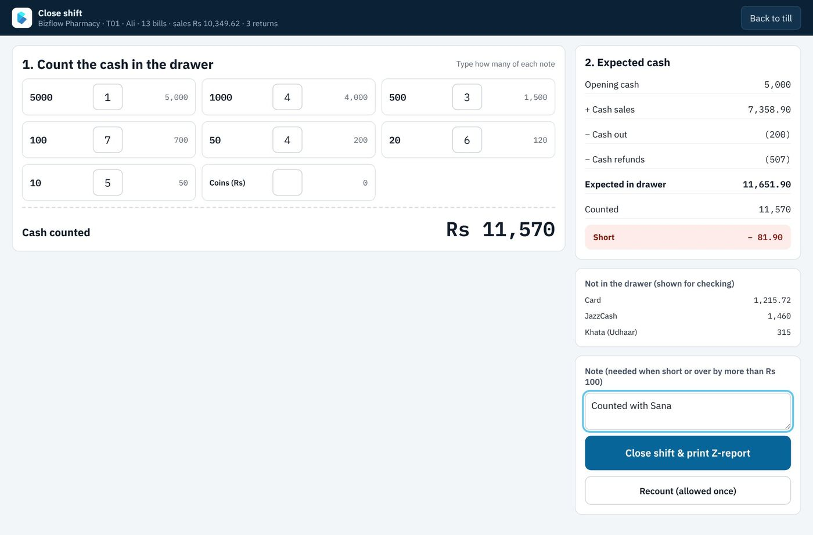
| Opening cash | What was in the drawer when the shift started. |
| + Cash sales, + Cash in | Cash that came in during the shift. |
| − Cash out, − Cash refunds | Cash that left the drawer. |
| Expected in drawer | What should be there. |
| Counted / Short / Over | What you counted, and the difference (red if short). |
| Not in the drawer | Card, JazzCash, Easypaisa and khata totals, for checking against the machine and phone. |
| Note | Required when short or over by more than Rs 100. Explain the difference. |
| Recount (allowed once) | Count again if you think you made a mistake. Allowed one time. |
| Close shift & print Z-report | Closes the shift and prints the Z-report. |
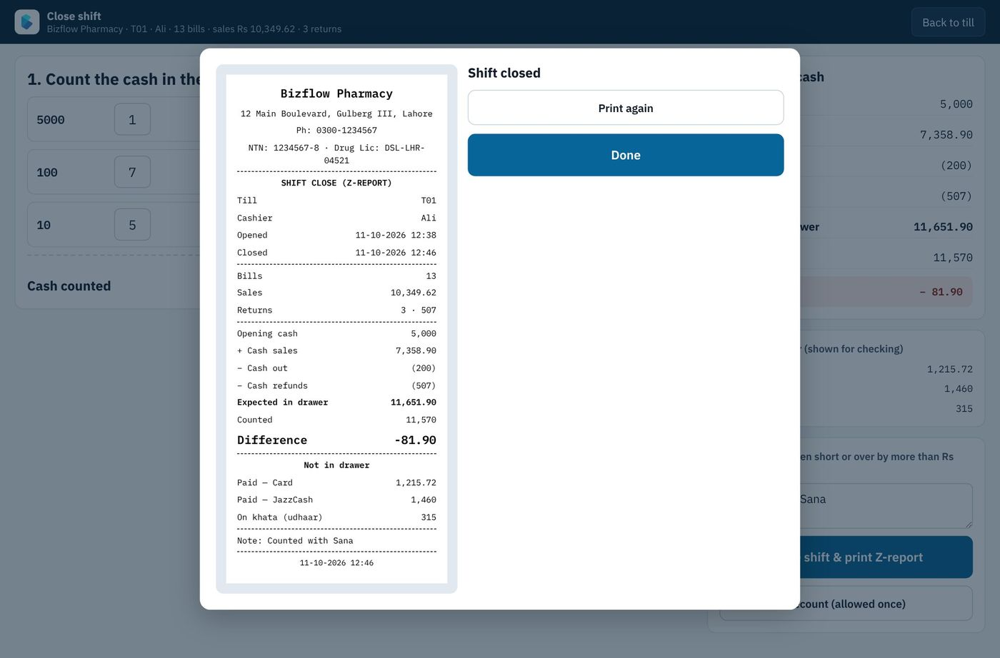
The Z-report is the printed summary of the shift: bills, sales, returns, every cash figure, the difference and the note. Keep it with the cash. Print again prints another copy; Done returns to sign-in. All Z-reports can be seen later in Financial reports → Shift closes.
| Key | What it does |
|---|---|
| F2 | Go to the search box. |
| Enter | In search: add the first (or highlighted) result. |
| ↑ ↓ | Move through search results. |
| F12 | Pay & print receipt. After a sale: start a new sale. |
| F9 | Open Return / Refund. |
| Esc | Clear the search. After a sale: start a new sale. |
The Backoffice is where the owner manages stock, purchases, money and settings. The owner lands here after signing in.
The dark menu on the left is always visible.
| Menu item | What you find there |
|---|---|
| Dashboard | Today’s figures, sales chart, low stock and expiring items. |
| Financial reports | 22 reports on sales, profit, stock, purchases, khata and tax. |
| Inventory | Products, stock and batches; stock counts; branch transfers; Excel import. |
| Purchases & Suppliers | Receiving stock (GRN), purchase history, supplier balances. |
| Expenses | Rent, electricity, salaries and other shop costs. |
| Customers & Khata | Customer credit accounts and payments. |
| Approvals & Activity log | Everything that happened, and the manager-PIN rules. |
| All stores | Figures of all your branches side by side. |
| Store, Users & Settings | Store details, receipt text, users, backups, FBR. |
At the bottom: the cloud backup status (click it to open settings), Open the till to sell from this computer, the language switch, and Sign out.
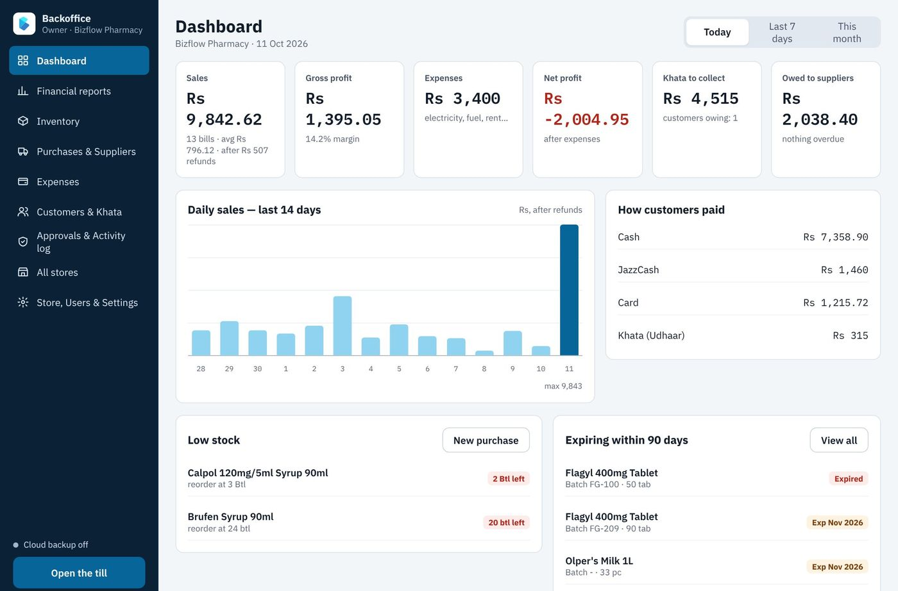
| Card | What it shows |
|---|---|
| Today / Last 7 days / This month | The period for the figure cards. |
| Sales | Sales after refunds, number of bills and the average bill. |
| Gross profit | Sales minus the cost of the stock sold, and the margin %. |
| Expenses | Shop expenses recorded for the period. |
| Net profit | Gross profit minus expenses. Shown in red when negative (e.g. a day when rent was paid). |
| Khata to collect | Total udhaar customers owe you now, and how many customers. |
| Owed to suppliers | What you owe distributors, and whether any of it is overdue. |
| Daily sales — last 14 days | A bar per day; today is the dark bar. |
| How customers paid | The split between cash, card, JazzCash, Easypaisa and khata. |
| Low stock | Items below their reorder level. New purchase opens a GRN. |
| Expiring within 90 days | Batches expiring soon or already expired. View all opens the list in Inventory. |
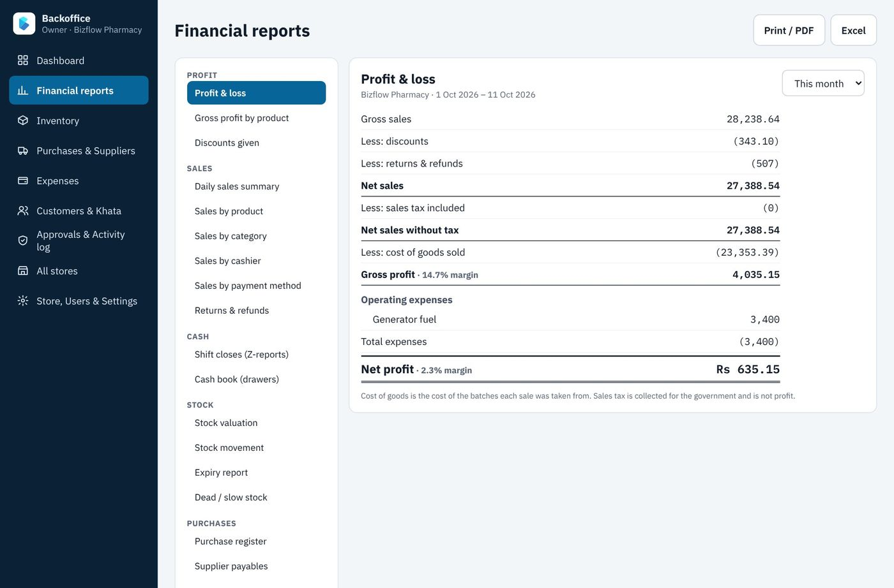
Pick a report on the left, choose the period at the top right, and read it on the right. Every report can be printed or saved as a PDF with Print / PDF, or exported with Excel.
| Report | Use it to… |
|---|---|
| Profit | |
| Profit & loss | See gross sales, returns, discounts, cost of goods, gross profit, expenses and net profit. |
| Gross profit by product | Find which products earn the most and which have thin margins. |
| Discounts given | Check every discount, by bill and cashier. |
| Sales | |
| Daily sales summary | Day-by-day totals. |
| Sales by product / category / cashier / payment method | Break sales down the way you need. |
| Returns & refunds | Every return with reason and condition. |
| Cash | |
| Shift closes (Z-reports) | Every closed shift with its short/over. |
| Cash book (drawers) | All cash in and out of each drawer, by shift and day. |
| Stock | |
| Stock valuation | The value of stock on hand at cost and at sale price. |
| Stock movement | Everything that went in and out: sales, purchases, returns, corrections, transfers. |
| Expiry report | Batches expiring within a chosen number of months, with their value. |
| Dead / slow stock | Items that have not sold for a long time, and since when. |
| Purchases, khata and tax | |
| Purchase register | All GRNs by supplier and invoice. |
| Supplier payables | What you owe each supplier and when it is due. |
| Khata receivables & ageing | Who owes you, and for how long (up to 30, 31–60, 61–90 and over 90 days). |
| Sales tax summary | Sales tax included in sales, for your tax adviser. |
| Branch comparison › | Opens All stores. |
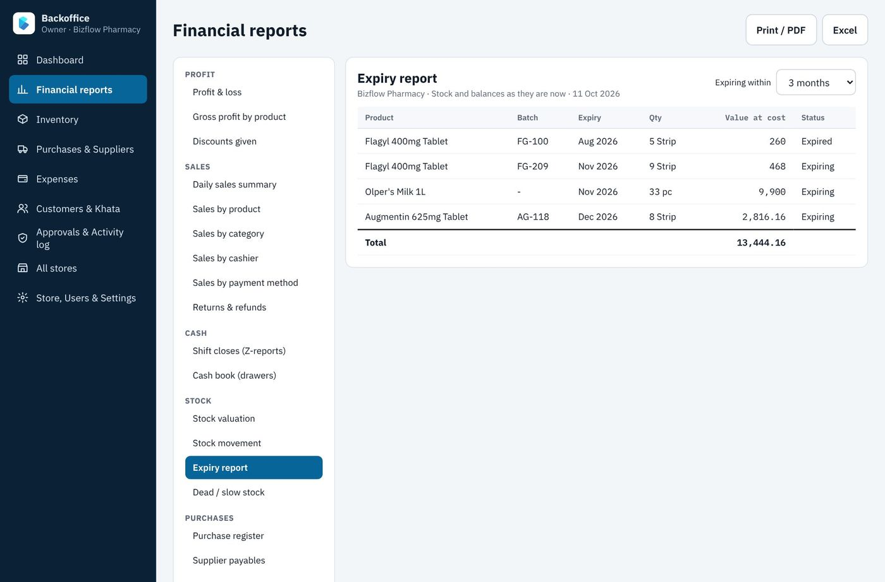
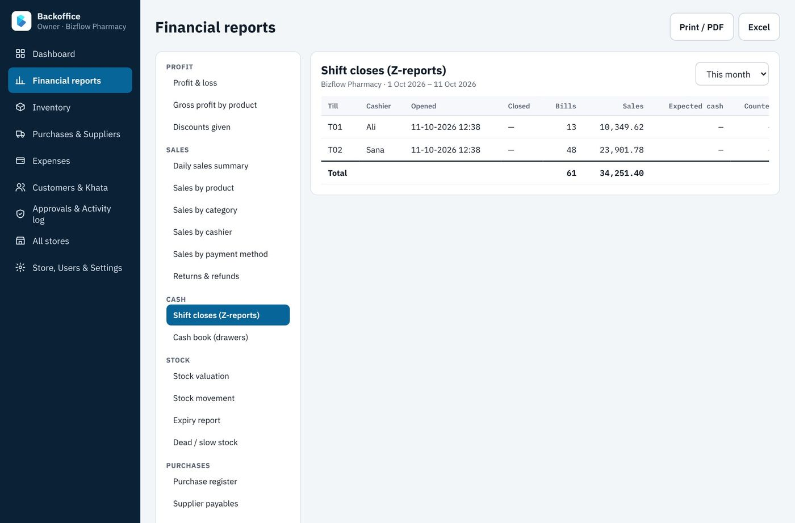
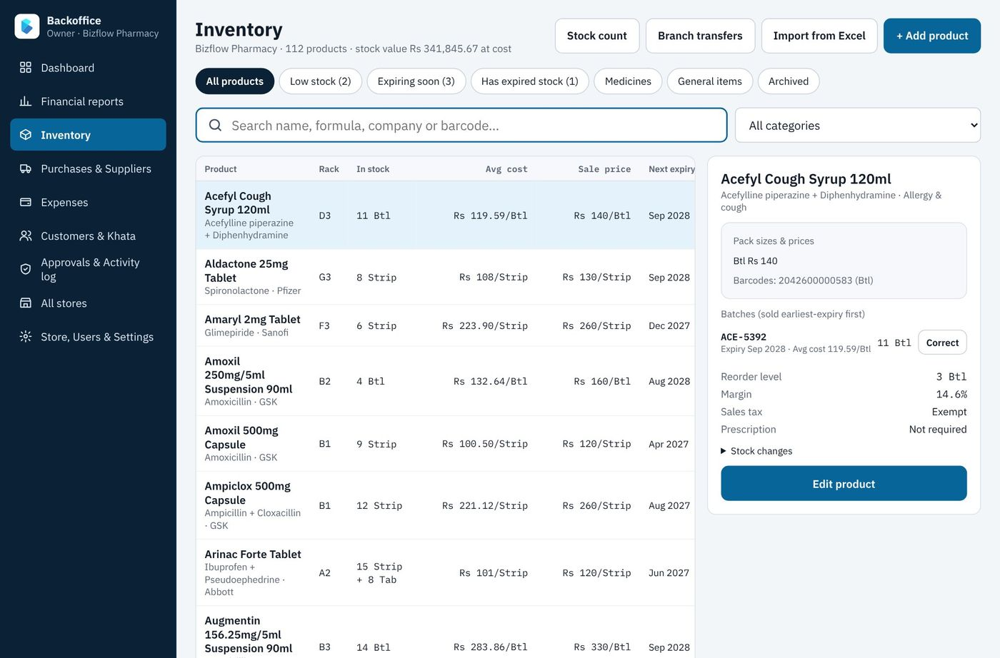
| Item | What it does |
|---|---|
| Header | Number of products and total stock value at cost. |
| Stock count, Branch transfers, Import from Excel, + Add product | Open those screens (explained below). |
| Filters | All products, Low stock, Expiring soon, Has expired stock, Medicines, General items, Archived (inactive products). The numbers show how many match. |
| Search / category | Search by name, formula, company or barcode; narrow by category. |
| Table | Product, rack, stock in packs and loose units (e.g. 15 Strip + 8 Tab), average cost, sale price and next expiry. Click a row to see its details. |
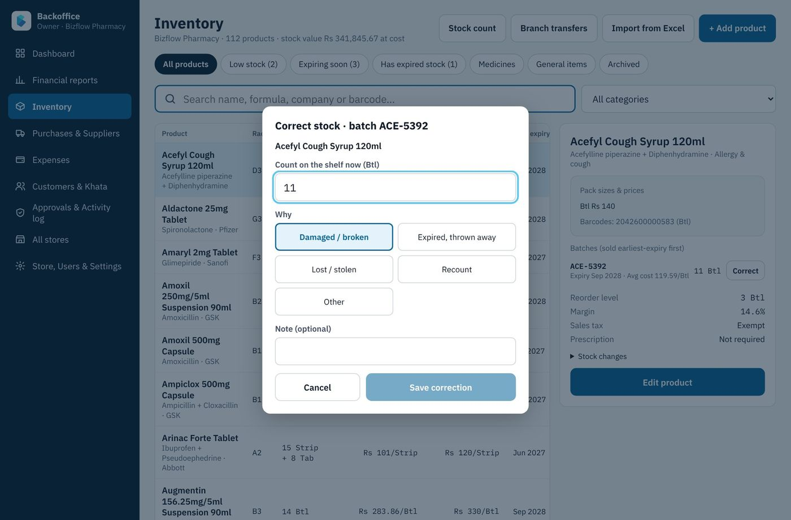
| Count on the shelf now | The real quantity of this batch on the shelf, in the pack shown. |
| Why | Damaged / broken, Expired thrown away, Lost / stolen, Recount, Other. Required. |
| Note (optional) | Any detail, e.g. dropped two bottles. |
| Save correction | Sets the stock. The difference is valued at cost and written in the activity log. |
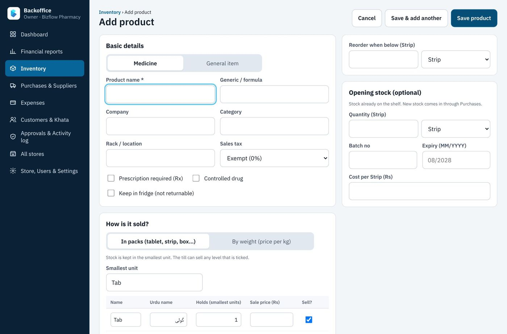
| Medicine / General item | Medicines get batch, expiry and prescription options; general items are things like milk, soap or sugar. |
| Product name * | As printed on the pack, with strength and form, e.g. Panadol 500mg Tablet. Must be unique. |
| Generic / formula | The salt, e.g. Paracetamol. Lets cashiers search by formula when a brand is out of stock. |
| Company | Manufacturer, e.g. GSK, Getz, Abbott. |
| Category | Your own grouping, e.g. Pain & fever, Antibiotics. Used for filters and reports. |
| Rack / location | Where it sits, e.g. B2. Shown to cashiers and used to count one rack at a time. |
| Sales tax | Exempt (0%) for most medicines. Prices are always tax-inclusive; this only splits out the tax in reports and FBR invoices. |
| Prescription required (Rx) | Shows an Rx badge at the till as a reminder to ask for the prescription. |
| Controlled drug | Marks narcotics/psychotropics for your records. |
| Keep in fridge (not returnable) | Insulin, vaccines, some injections. These can’t be returned at the till. |
| In packs / By weight | Packs for tablets, strips, bottles, pieces. By weight for loose items with a price per kg. This can’t be changed after the product is saved. |
| Smallest unit | The unit stock is counted in: Tab, Cap, Btl, Pc, Sachet… |
| Pack levels: Name, Urdu name | Each pack the product comes in, e.g. Tab, Strip, Box. The Urdu name is used on Urdu screens and receipts. |
| Holds (smallest units) | How many smallest units are in the pack: Strip = 10, Box = 200. |
| Sale price (Rs) | The retail price of that pack (MRP). |
| Sell? | Tick the packs the till may sell. Untick Tab if you never sell loose tablets. |
| + Add pack level | Adds another, bigger pack. A hint such as 1 Strip = 10 Tab = Rs 40 helps you check the numbers. |
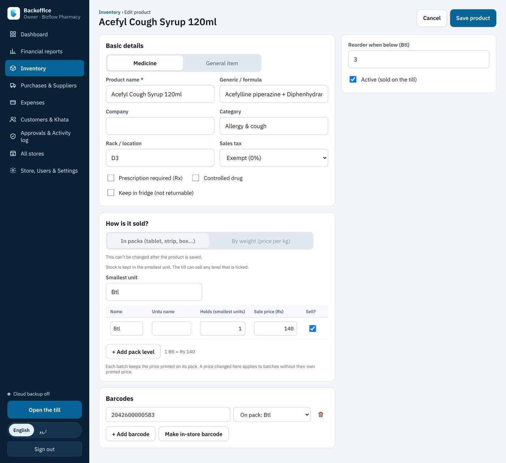
| Barcode + On pack | The code printed on the pack and which pack it is on. Scanning a box barcode adds a box. A product can have several barcodes; a barcode can belong to only one product. |
| + Add barcode | Adds another row. Click in the box and scan. |
| Make in-store barcode | Creates a code for loose items that have none, so you can print a label. |
| Bin icon | Removes that barcode. |
| Reorder when below | When stock falls below this (in the pack you choose), the item shows in Low stock. |
| Active (sold on the till) | Untick to retire a product without losing its history. It moves to Archived. |
| Opening stock (new products only) | Stock already on the shelf: Quantity and pack, Batch no, Expiry (MM/YYYY) and Cost per pack. Later stock comes in through Purchases. |
Buttons: Save product, Save & add another (keeps you on a blank form), Cancel.
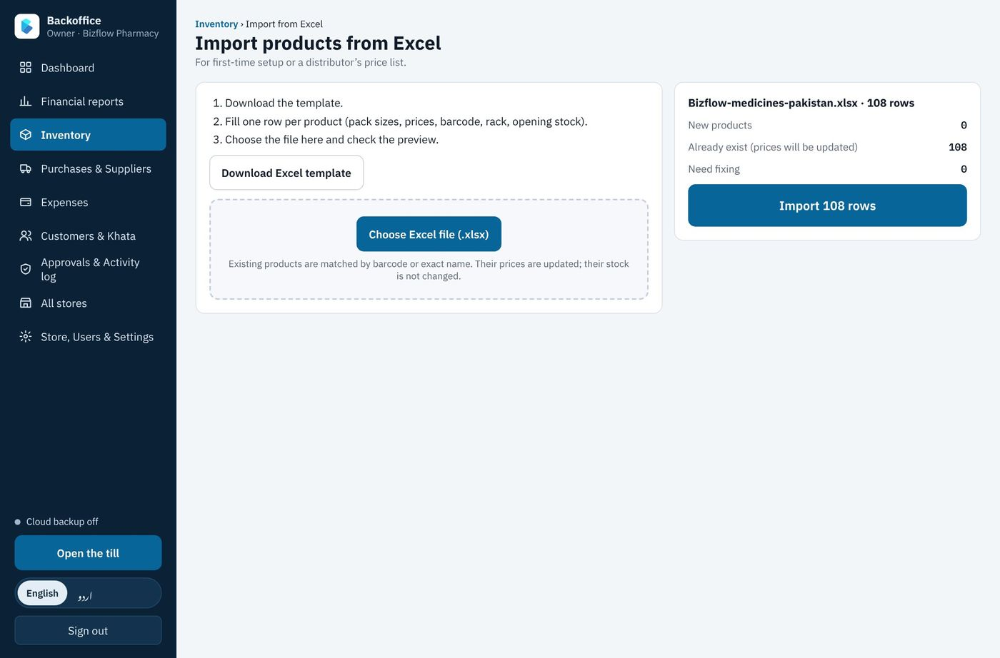
products-template.xlsx with the right columns and example rows.| Column | What to put |
|---|---|
| Name * | Required. Product name with strength and form. |
| Generic / formula, Company, Category | Optional text. |
| Type (Medicine / General) | Medicine or General. |
| Sold by (Pack / Weight) | Pack for most items; Weight for loose items. |
| Smallest unit (Tab, Cap, Btl, Pc) | The unit stock is counted in. |
| Price of smallest unit (Rs) | Price of one tablet / piece. |
| Sell smallest unit loose? (Y/N) | Y if you sell single tablets. |
| Pack 2 name / holds / price | e.g. Strip, 10, 40. |
| Pack 3 name / holds / price | e.g. Box, 200, 780. Holds is always in smallest units. |
| Price per kg (Rs, weight items) | Only for Weight items. Leave empty for packs. |
| Barcode / Barcode is on (pack name) | The code and which pack it is printed on, e.g. Box. |
| Rack | Shelf location. |
| Sales tax % | Usually 0 for medicines. |
| Prescription needed? (Y/N) | Shows the Rx badge at the till. |
| Reorder when below (smallest units) | e.g. 100 tablets. |
| Opening stock (smallest units, or grams) | Stock on hand now. Grams for weight items. |
| Batch no / Expiry (MM/YYYY) | For the opening stock. |
| Cost (Rs) of smallest unit, or per kg | What you paid, for profit reports. |
Count one shelf at a time while the shop keeps selling.
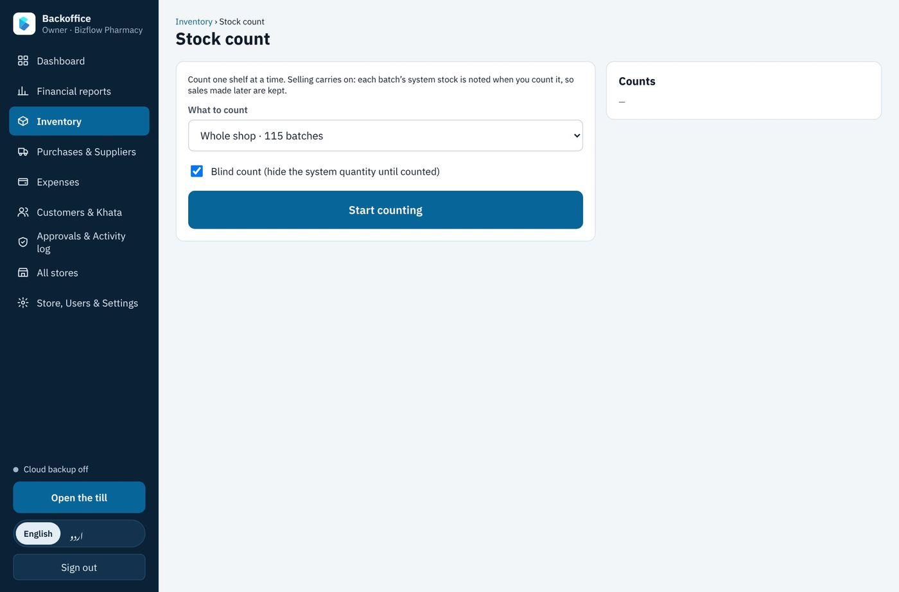
| What to count | Whole shop, one rack (e.g. Rack A1 · 5 batches) or Items with no rack. |
| Blind count | Hides the system quantity until each line is counted, so counters don’t just copy the number. |
| Start counting | Creates the count sheet. Earlier counts are listed under Counts with their status (In progress, Applied, Cancelled). |
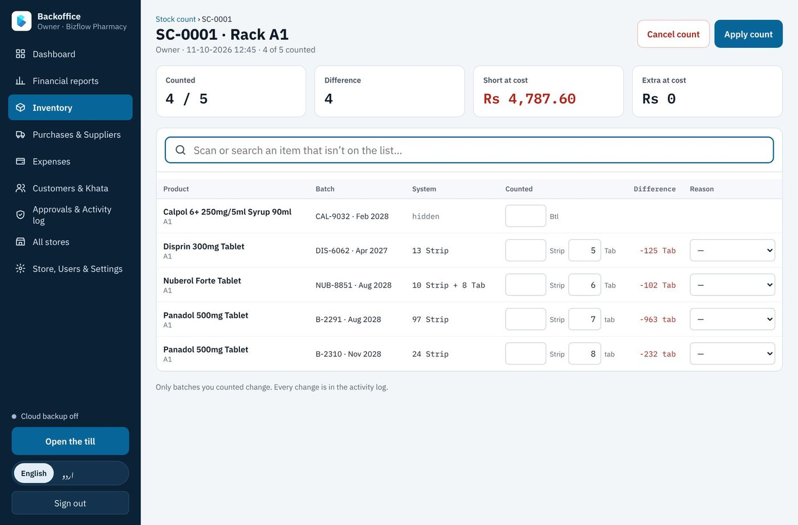
Move stock to another branch instead of buying more.
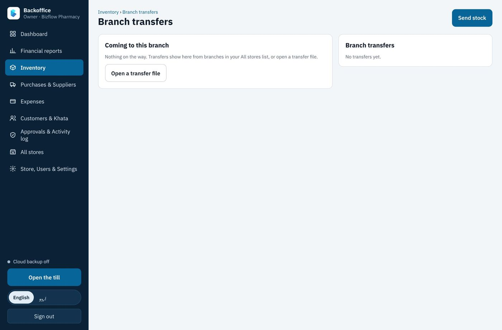
Coming to this branch lists transfers sent to you by branches in your All stores list. Open a transfer file loads a file sent by WhatsApp or USB. On the right is the history of sent and received transfers.
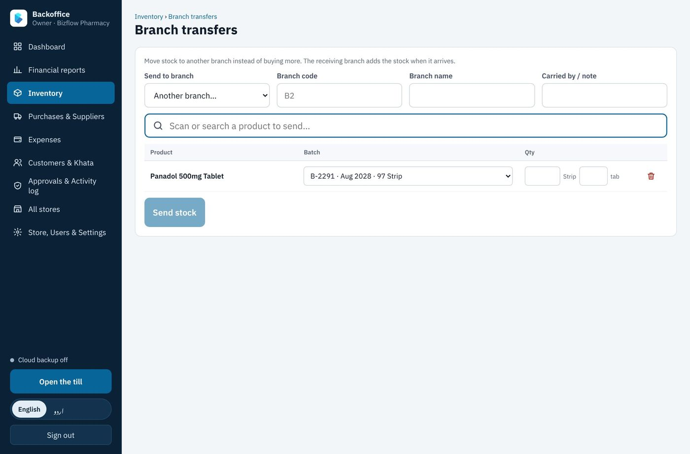
| Send to branch / Branch code / Branch name | Pick a branch from your list, or Another branch… and type its code and name. |
| Carried by / note | Who is taking it, e.g. rider name. |
| Product search | Scan or search each product to send. |
| Batch, Qty | Pick the batch and the quantity in packs and loose units. Expired batches can’t be sent. |
| Send stock | Takes the stock off this branch and creates a transfer note. You can then Print transfer slip and Download transfer file (for a branch that doesn’t read your cloud backup). |
Open the incoming transfer, check each line and type what actually arrived. Choose a reason for any difference (Broken in transit, Missing, Sent less by mistake), then Confirm received. The stock is added under the same batch numbers and expiry dates.
Use this every time stock arrives from a distributor. It adds the stock with its batches and records what you owe.
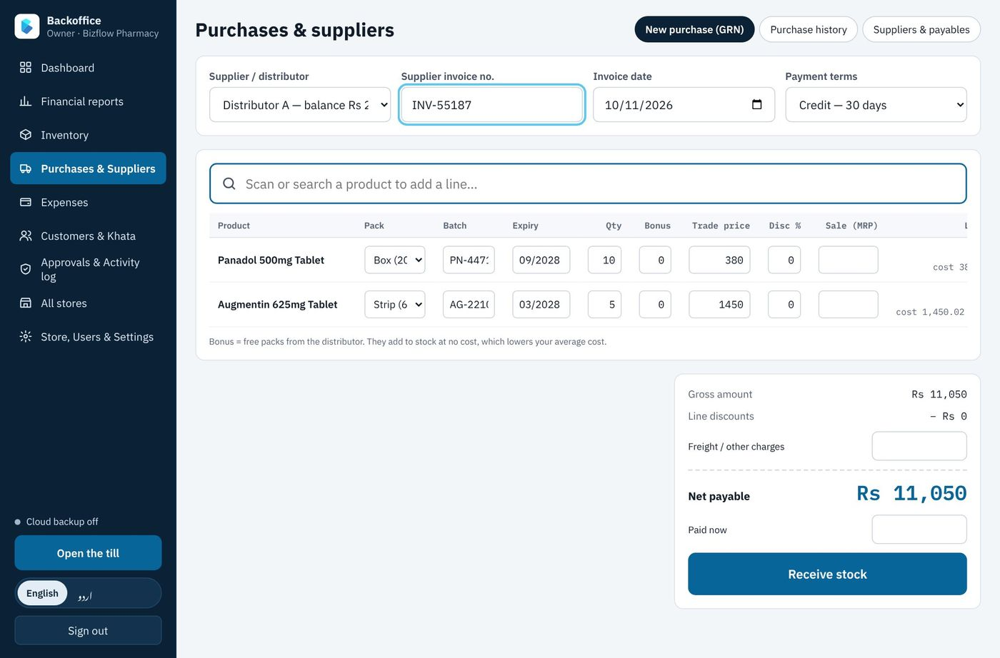
| Field | What to enter |
|---|---|
| Supplier / distributor | Choose the supplier. Their current balance is shown. + New supplier at the bottom of the list adds one. |
| Supplier invoice no. | The number on the distributor’s bill, so you can find it later. |
| Invoice date | Date on the bill. |
| Payment terms | Cash on delivery or credit days (e.g. 30 days). Sets the due date in Supplier payables. |
| Product search | Scan or search each product to add a line. |
| Pack | The pack the distributor bills in (Box, Strip…). |
| Batch / Expiry | From the pack. Expiry as MM/YYYY. |
| Qty / Bonus | Packs billed, and free bonus packs. Bonus packs add to stock at no cost and lower your average cost. |
| Trade price / Disc % | Price per pack on the invoice and any line discount. |
| Sale (MRP) | The retail price printed on this batch. Leave empty to keep the product’s current price. |
| Cost | Shown at the end of each line: the real cost per pack after bonus, discount and freight. |
| Freight / other charges | Delivery charges. They are spread over the lines by value. |
| Net payable | What you owe for this invoice. |
| Paid now | Amount paid on delivery. The rest goes to the supplier’s balance. |
| Receive stock | Saves the purchase and adds the stock. |
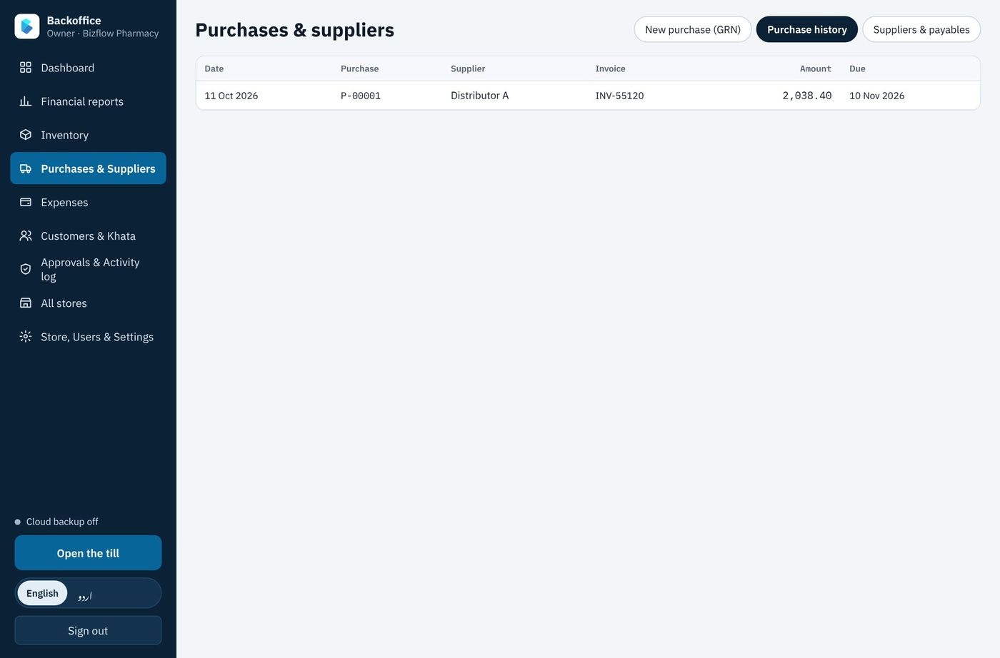
Every GRN with date, number, supplier, invoice number, amount and status. Click one to see its lines.
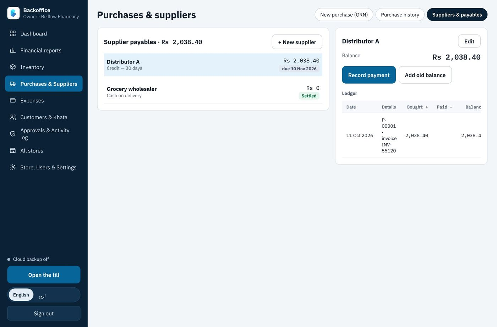
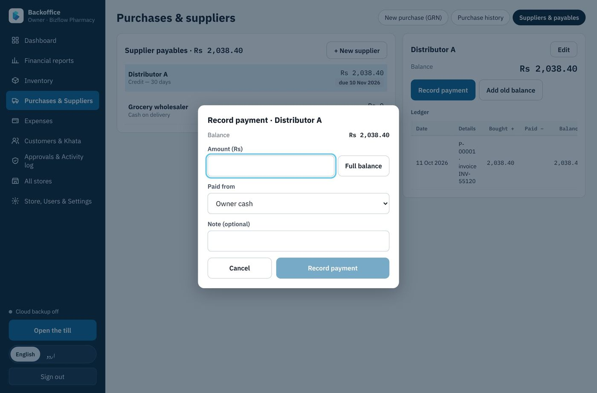
| Amount (Rs) | Amount paid. Full balance fills the whole balance. |
| Paid from | Owner cash, Bank, Cash drawer or JazzCash / Easypaisa. Paying from the cash drawer reduces that drawer’s expected cash. |
| Note | Cheque number, etc. |
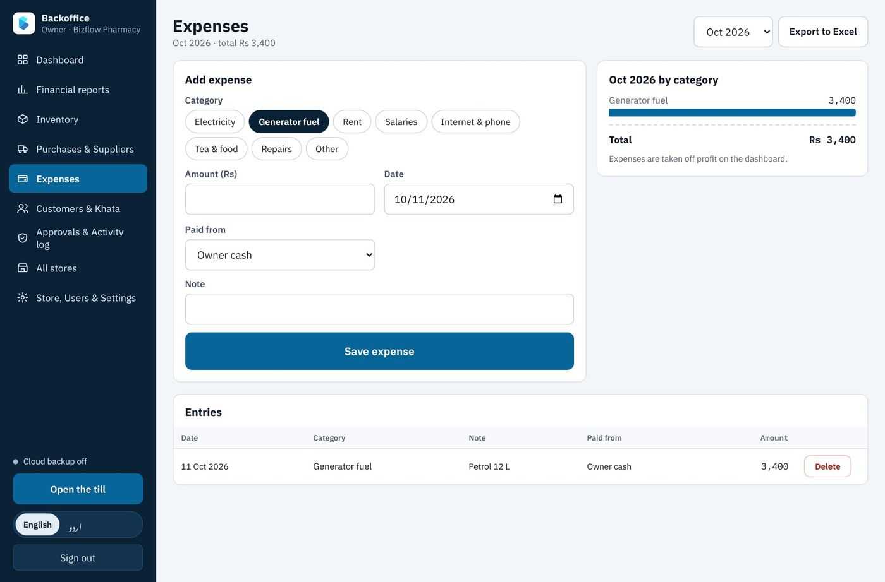
| Category | Electricity, Generator fuel, Rent, Salaries, Internet & phone, Tea & food, Repairs, Other. |
| Amount (Rs), Date | How much and when. |
| Paid from | Owner cash, Bank, Cash drawer or JazzCash / Easypaisa. Cash drawer takes it out of the till’s expected cash. |
| Note | e.g. Petrol 12 L. |
| Save expense | Adds it. Expenses are taken off profit on the dashboard and in Profit & loss. |
| Month / Export to Excel | Choose the month; export the list. |
| Entries → Delete | Removes a mistaken entry (logged). |
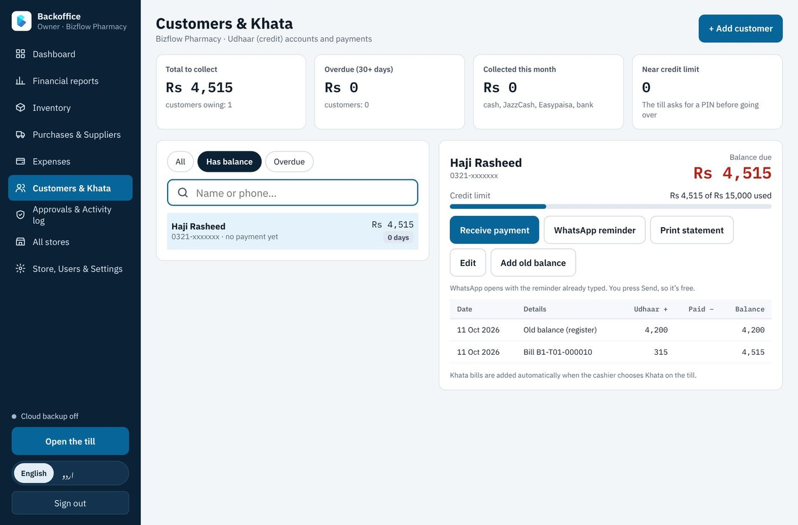
| Item | What it does |
|---|---|
| Total to collect | All udhaar outstanding. |
| Overdue (30+ days) | Customers who haven’t paid for more than 30 days. |
| Collected this month | Payments received by cash, JazzCash, Easypaisa or bank. |
| Near credit limit | Customers close to their limit. The till asks for a PIN before going over. |
| All / Has balance / Overdue, search | Find a customer by name or phone. |
| Balance due / Credit limit bar | What they owe and how much of their limit is used. |
| Receive payment | Records money the customer pays (see below). |
| WhatsApp reminder | Opens WhatsApp with a polite reminder already typed. You press Send, so it is free. |
| Print statement | Prints the ledger on the receipt printer. |
| Edit | Name, phone, credit limit, receipt language, active. |
| Add old balance | Enters udhaar from your old register. |
| Ledger | Every bill (Udhaar +), payment and refund (Paid −) with the running balance. Khata bills are added automatically from the till. |
| + Add customer | Create a customer before their first khata sale. |
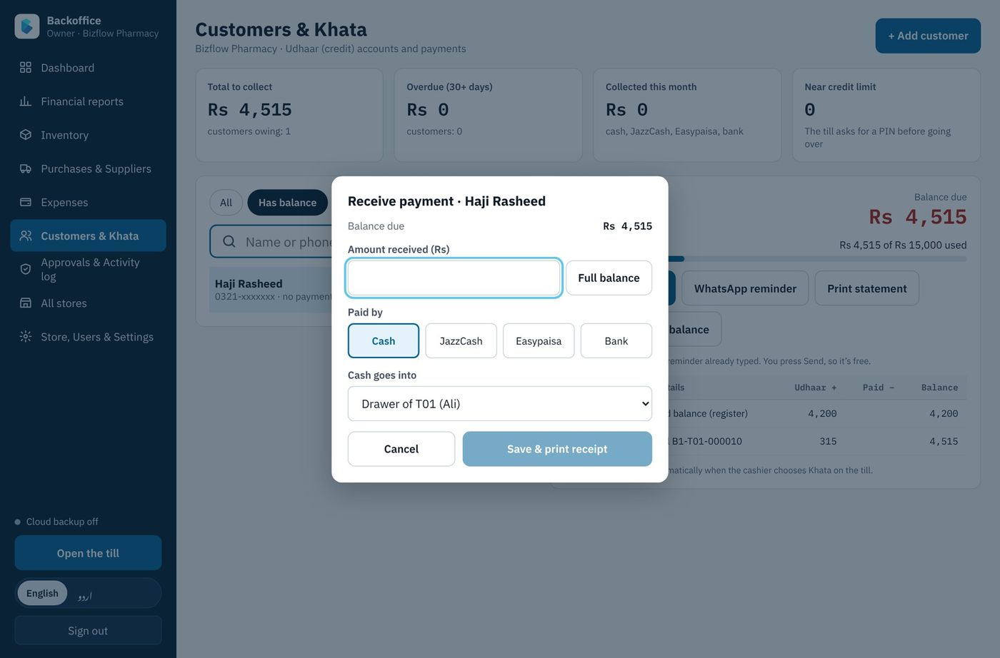
| Amount received | What the customer paid. Full balance fills it in. |
| Paid by | Cash, JazzCash, Easypaisa or Bank. |
| Cash goes into | For cash: the drawer that received it, so the shift’s expected cash is right. |
| Save & print receipt | Records the payment and prints a receipt with the new balance. |
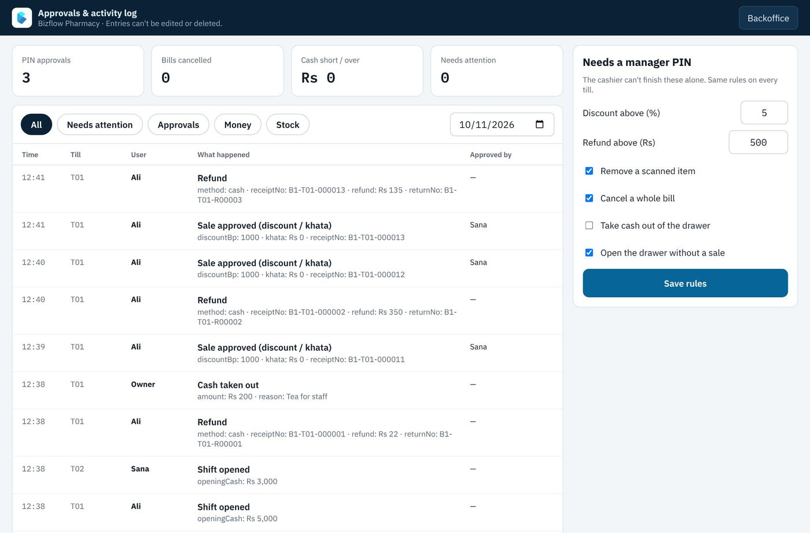
Every important action is written here: sales approved with a PIN, refunds, cancelled bills, cash in/out, drawer openings, stock corrections, price changes and shift opens/closes. Entries can’t be edited or deleted.
| Top cards | PIN approvals, bills cancelled, cash short/over and items that need attention for the chosen day. |
| Filters | All, Needs attention, Approvals, Money, Stock, and the date. |
| Columns | Time, till, user, what happened (with details such as receipt number and amount) and who approved it. |
| Discount above (%) | Discounts higher than this need approval. Default 5. |
| Refund above (Rs) | Refunds higher than this need approval. Default 500. |
| Remove a scanned item | Stops items from being quietly removed after scanning. |
| Cancel a whole bill | Needs approval to cancel. |
| Take cash out of the drawer | Needs approval for cash out. |
| Open the drawer without a sale | Needs approval for Open drawer. |
| Save rules | Applies the rules on every till at once. |
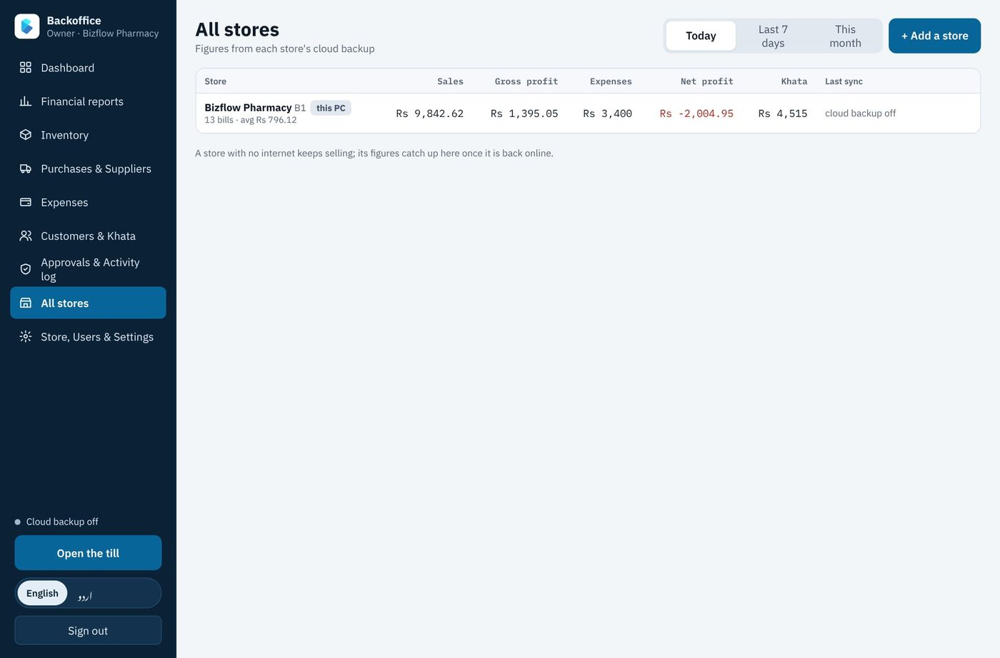
See every branch’s sales, gross profit, expenses, net profit, khata and last sync time in one table, for Today, Last 7 days or This month. Each branch must have cloud backup on.
+ Add a store: paste the other store’s cloud database URL and a token (a read-only token is best). Its figures are read from the cloud. A store with no internet keeps selling; its figures catch up here once it is back online.
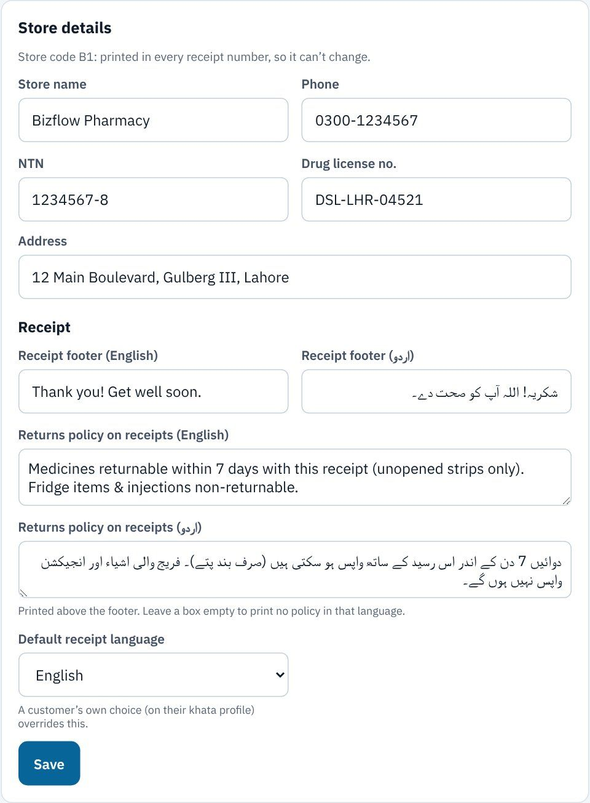
| Store name, Phone, Address | Printed at the top of receipts. |
| NTN | Your National Tax Number, printed on receipts. |
| Drug license no. | Printed on receipts as Drug Lic. |
| Receipt footer (English / اردو) | The last line of the receipt, e.g. Thank you! Get well soon. |
| Returns policy on receipts (English / اردو) | Printed above the footer, e.g. Medicines returnable within 7 days with this receipt…. Leave a box empty to print no policy in that language. |
| Default receipt language | English or Urdu. A customer’s own choice (on their khata profile) overrides this. |
| Save | Saves; the next receipt uses the new text. |
The store code (e.g. B1) is shown at the top and can’t be changed, because it is inside every receipt number.
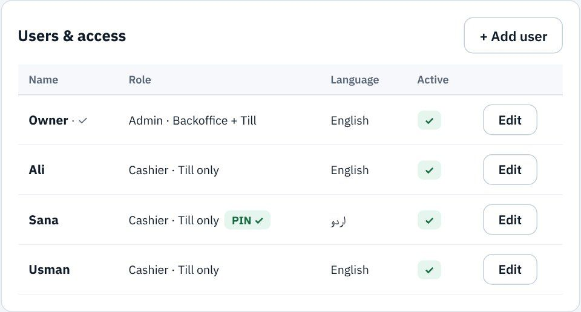
The list shows each person’s role, language and whether they are active. PIN ✓ means the cashier can approve. + Add user creates a login; Edit changes one.
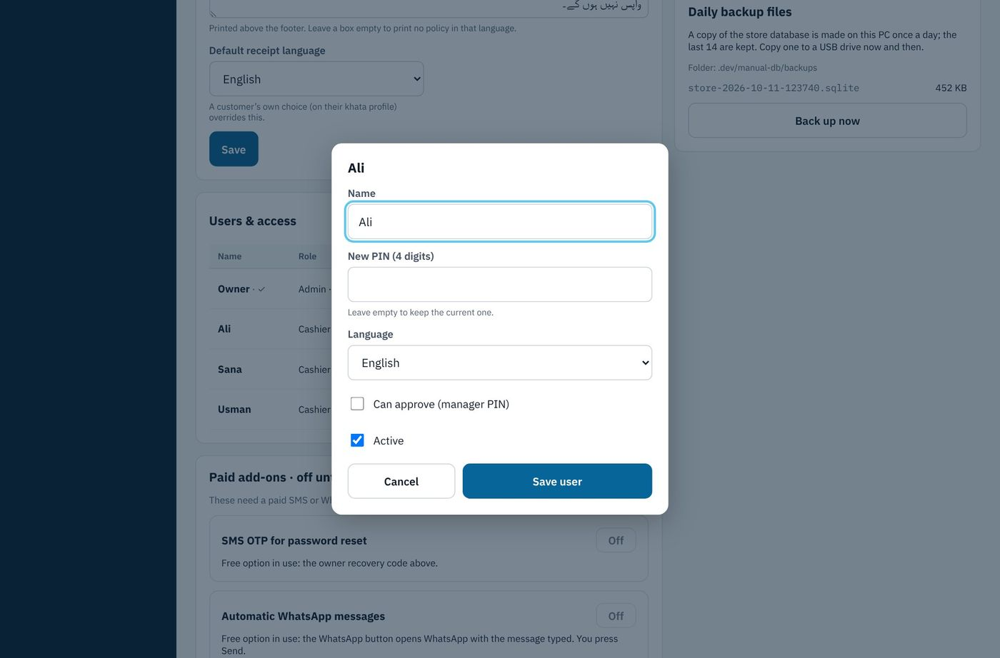
| Name | Shown on the sign-in screen, receipts and the activity log. |
| Role (new users) | Cashier · Till only or Admin · Backoffice + Till. |
| PIN (4 digits) / Password | Cashiers use a 4-digit PIN; admins a password of 8+ characters. When editing, leave empty to keep the current one. |
| Language | The language the app opens in for this person. |
| Can approve (manager PIN) | Lets this cashier approve discounts, refunds etc. for others. |
| Active | Untick when someone leaves. Their history stays; they can no longer sign in. |
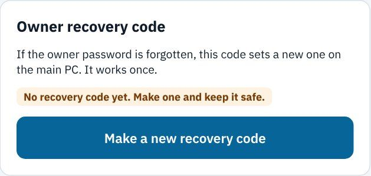
If the owner password is forgotten, this code sets a new one on the main PC. Press Make a new recovery code, write it down or print it, and keep it somewhere safe outside the shop. The code is shown only once. It works once; make a new one after using it. Making a new code stops any older code from working.
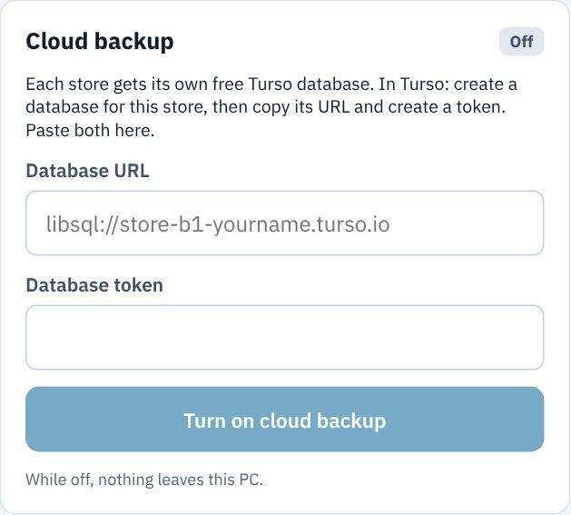
Each store gets its own free Turso database. With cloud backup on, every sale and change is copied to the cloud within moments, so a broken or stolen PC loses nothing, and the owner can see all branches in All stores.
store-b1).libsql://) and create a token.The status in the bottom-left of the Backoffice shows Cloud backed up · 12:41, Offline · N changes waiting (no internet; it catches up automatically) or Cloud backup off. While off, nothing leaves this PC. Private settings such as the FBR token are never sent to the cloud.
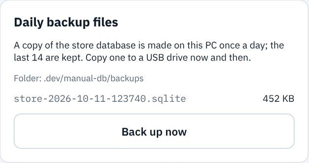
A copy of the store database is made on the main PC once a day; the last 14 are kept in the folder shown. Back up now makes one immediately. Copy one to a USB drive now and then, and always before reinstalling Windows.
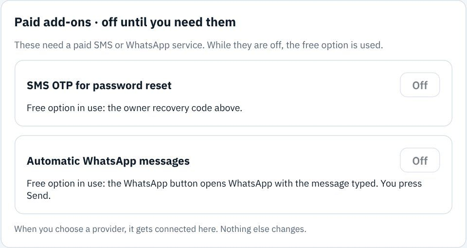
SMS OTP for password reset and automatic WhatsApp messages need a paid SMS/WhatsApp provider and are off. While off, the free option is used: the owner recovery code, and the WhatsApp button that opens WhatsApp with the message typed for you.
For Tier-1 retailers who must report every sale to FBR. When on, each sale and refund is sent to FBR (PRAL) and the receipt shows FBR’s invoice number and QR code. A sale never waits for FBR: if FBR can’t be reached the invoice is queued and sent later.
| Send invoices to FBR | Turns reporting on. |
| Service | Sandbox (testing) first, then Live once FBR approves you. |
| POS ID (from FBR) | The POS ID FBR gave you for this store. |
| Token (from FBR) | Your API token. Kept on this PC only. |
| PCT code for items | Tariff code sent with each item. 3004.9099 is medicines; ask your tax adviser for general items. |
| Service address | Only change if FBR changes its address. |
| Save FBR settings | Saves. Invoices that couldn’t be sent are listed with Send waiting invoices now. |
Bizflow POS — made for Pakistani medical and general stores.